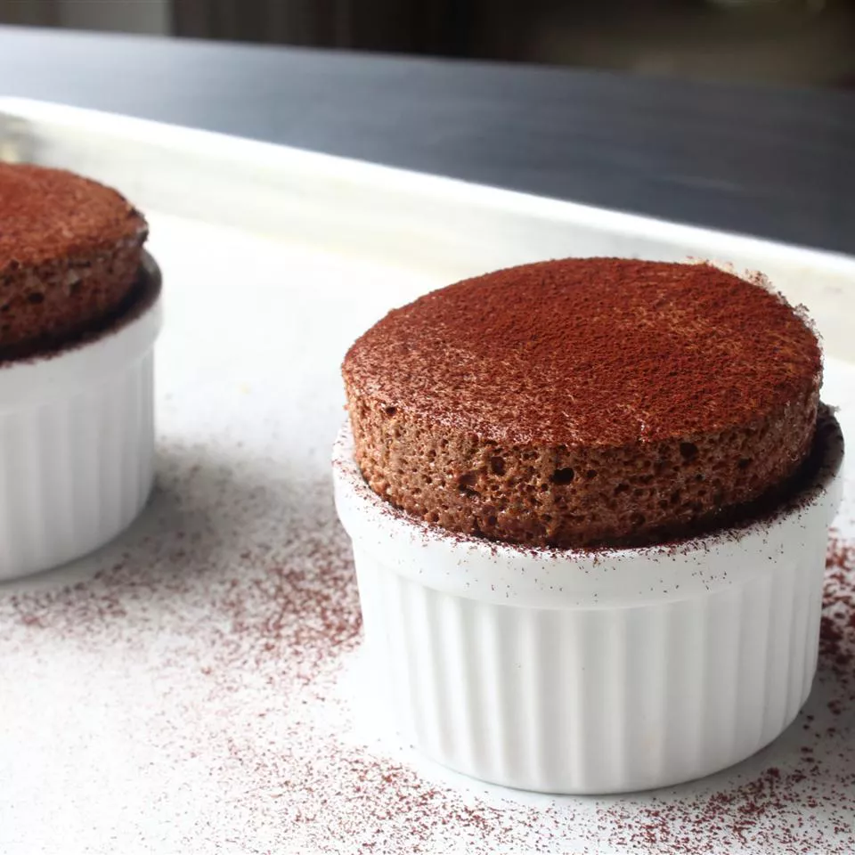

Chocolate Soufflé

Description
An individual chocolate soufflé is visually impressive and perfect for your special someone. Dust the cooked chocolate soufflés with a bit of cocoa powder just before serving if you like.
Ingredients
- 1 teaspoon melted butter, or as needed
- 2 tablespoons white sugar
- 2 ounces 70% dark chocolate, broken into pieces
- 1 tablespoon butter
- 1 tablespoon all-purpose flour
- 4 ½ tablespoons cold milk
- 1 pinch salt
- 1 pinch cayenne pepper
- 1 large egg yolk
- 2 large egg whites
- 1 pinch cream of tartar
- 1 tablespoon white sugar, divided
Steps
- Preheat the oven to 375 degrees F (190 degrees C). Line a rimmed baking sheet with parchment paper.
- Brush the bottom and sides (right up to the rim) of two 5-ounce ramekins lightly with 1 teaspoon melted butter. Add 1 tablespoon white sugar to each ramekin; rotate until sugar coats all surfaces, then tip to pour off extra sugar.
- Pour 3 cups hot water into a pot set over low heat. Place chocolate pieces in a metal mixing bowl; place the bowl over the pot of water until chocolate melts; do not let the water simmer or boil.
- Meanwhile, melt 1 tablespoon butter in a skillet over medium heat. Whisk in flour until incorporated and mixture thickens, about 1 minute. Reduce heat to low. Whisk in cold milk until mixture becomes smooth and thickens, 2 to 3 minutes. Remove from the heat.
- Transfer milk mixture to the bowl with melted chocolate. Add salt andcayenne pepper and mix until thoroughly combined. Add egg yolk and mix to combine. Leave the bowl above the hot (not simmering) water to keep chocolate warm while you whip the egg whites.
- Whisk egg whites and cream of tartar in a mixing bowl until mixture begins to thicken; a drizzle from the whisk should stay on the surface for one second before disappearing into the mix.
- Whisk in 1/3 of the sugar for 15 seconds. Repeat two more times to whisk in remaining sugar. Continue to whisk until mixture holds soft peaks and has a consistency of shaving cream, 3 to 5 minutes.
- Transfer a little less than 1/2 of the egg white mixture to the chocolate mixture; mix until thoroughly incorporated, 1 to 2 minutes. Gently fold in remaining egg white mixture with a spatula until no white remains. Divide between the prepared ramekins and place on the lined baking sheet.
- Bake in preheated oven until soufflés are puffed and have risen above the top of the rims, 12 to 15 minutes.
Back to top of page
Return Home